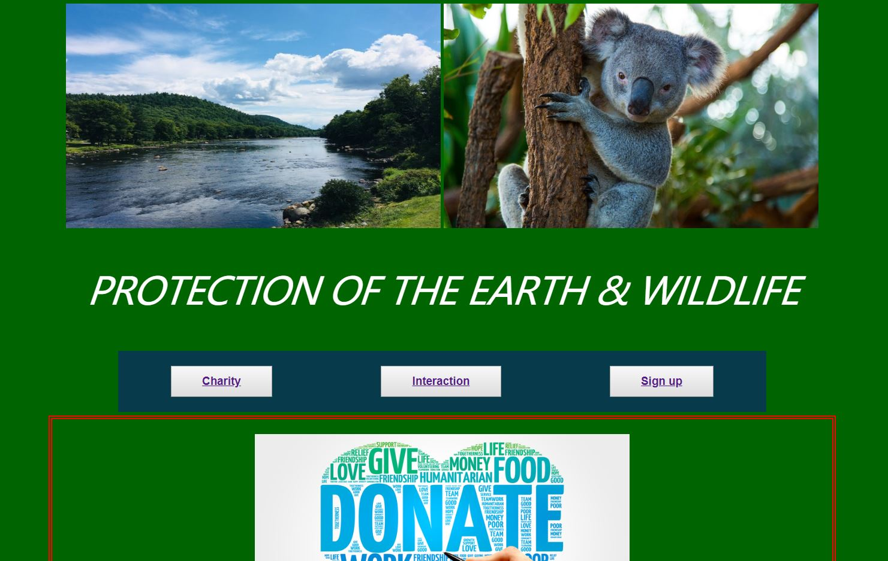
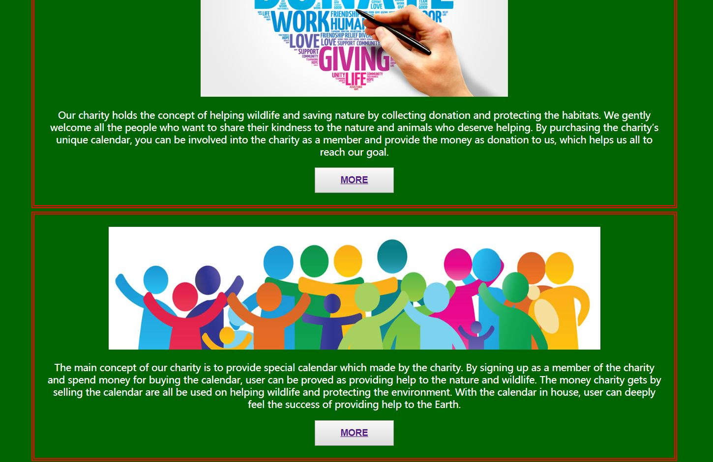
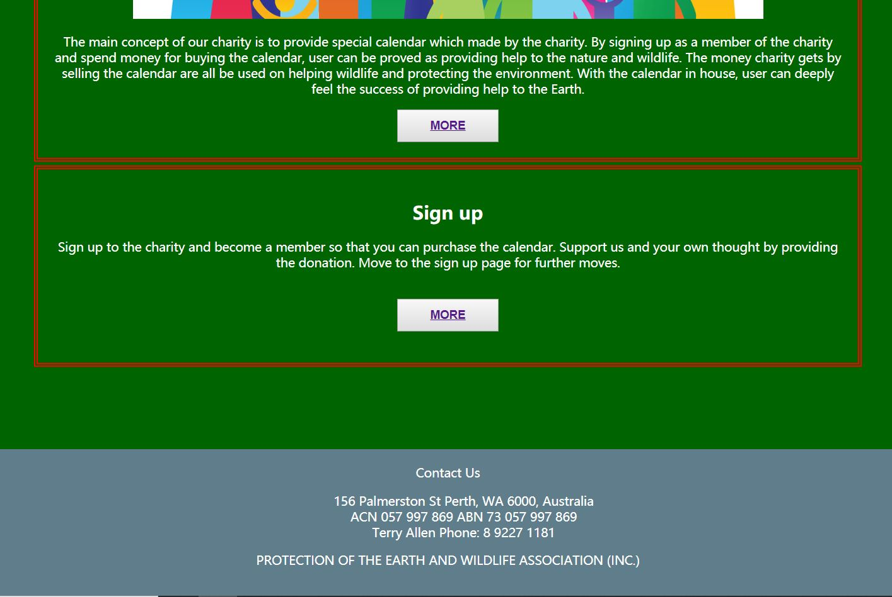
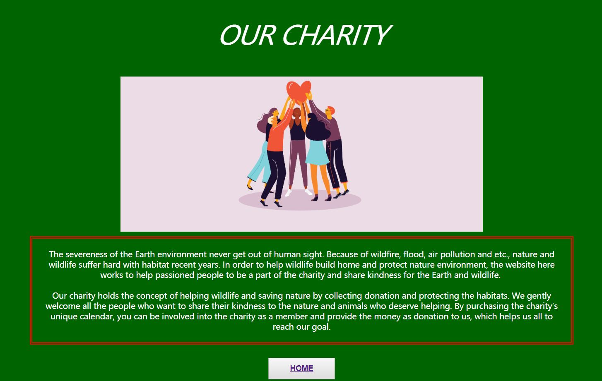
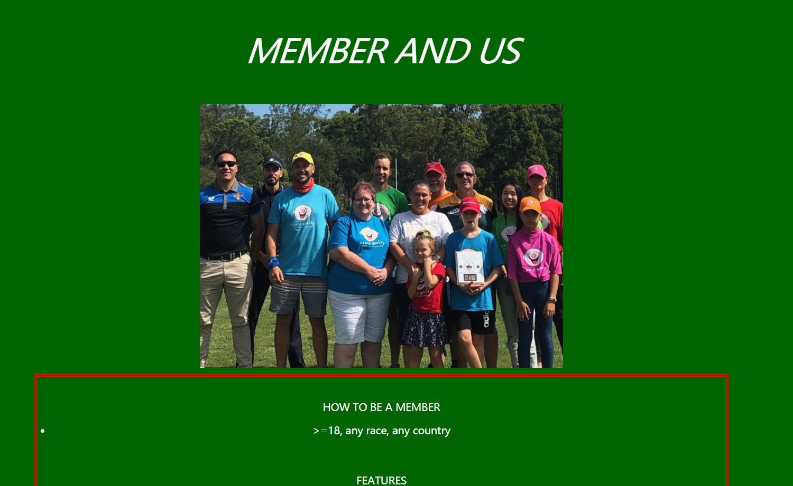
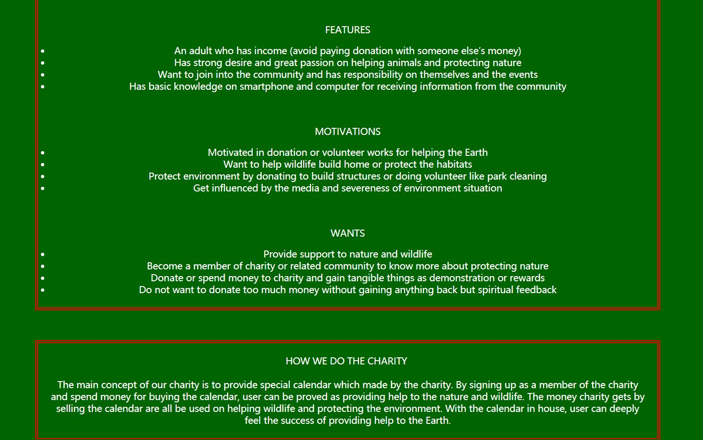
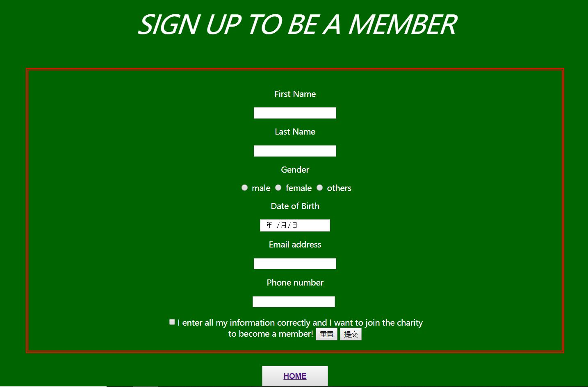

Design patterns and principles
Principles
The whole all style is to be simple and straight to the visitors in order to communicate the main idea clearly so as to attract their attentions as quick as possible. The font is simple and only the title is a bit fancy in order to be outstanding. I mainly create the contrast with color to highlight the content part for visitors to be focus on. Most of the shapes being used on the website is rectangle, for surrounding the main part of the website and be easy to follow. The whole background of the website is deep green color, related to the main concept of the website, nature and wildlife. The red broader is being used to strongly attract visitors’ attention and let them read the text content. All the content is at the middle of the website and roll down when visitors continuing. This is also a method to make the contents easy to view and follow.
Patterns
The first part is the pictures of nature and wildlife, which gives visitors a starting idea of the concept of the website. The navigation bar appears early in order to better lead the visitors. The main part is the combination of pictures and texts which briefly describe the charity, and leaves buttons for people who get interested to find out more. The footer contains methods of contact in order to provide more convenience. Each sub page fully talks about the content it focuses on to give visitors clear idea of what they are looking for.
Screenshots
      Reflection from proposal
Getting idea from the proposal and feedbacks, I increase the pages of the website in order to make each section of the content clear for the users. I make the website into four pages overall. The first page is the home page, giving brief ideas of the charity to the users and lead them to the sections they interested. There are three sub pages, and I use each page to present the function clear for the users. One for describing the charity, one for the events and membership, and one for users who want to sign up. I make multiple pages in order to better guide and communicate to the users about the charity.
References
CHARITY, 2020. How To Promote Your Charity Event. [image] Available at: "https://www.eventbrite.com.au/blog/promote-charity-event-ds00/" [Accessed 26 November 2020].
Mirsky, S., 2019. The Nature Cure. [image] Available at: "https://www.scientificamerican.com/article/the-nature-cure/" [Accessed 26 November 2020].
Santa Cruz, N., 2020. Coronavirus Charity: How To Decide Where To Donate. [image] Available at: "https://www.cpapracticeadvisor.com/small-business/news/21136116/coronavirus-charity-how-to-decide-where-to-donate" [Accessed 26 November 2020].
The charity hub, 2020. [image] Available at: "http://www.thecharityhub.com.au/membership" [Accessed 26 November 2020].
visitnsw.com, 2020. [image] Available at: "https://www.visitnsw.com/things-to-do/family-holidays/zoos-wildlife-farmstays%22" [Accessed 26 November 2020].
2020. The Couriermail. [image] Available at: "https://www.couriermail.com.au/subscribe/news/1/?sourceCode=CMWEB_WRE170_a_GGL&dest=https%3A%2F%2Fwww.couriermail.com.au%2Fquestnews%2Flogan%2Flogan-brothers-and-muddies-charity-footy-match-kicks-off-to-raise-funds-for-kids-with-cancer%2Fnews-story%2Fef73fba0716ba0fd621b118cb0692b07&memtype=anonymous&mode=premium" [Accessed 26 November 2020].